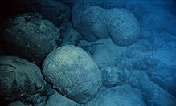

| home | properties | benifits | buy |
water, a substance composed of the chemical
elements hydrogen and oxygen and existing in gaseous, liquid, and solid states.
It is one of the most plentiful and essential of compounds.
A tasteless and odourless liquid at room temperature,
it has the important ability to dissolve many other substances..
 .
.
The word water comes from Old English wæter, from Proto-Germanic *watar (source also of Old Saxon watar, Old Frisian wetir, Dutch water, Old High German wazzar, German
Wasser, vatn, Gothic êçÖêå∞êçÑêçâ (wato),
from Proto-Indo-European *wod-or, suffixed form of root *wed- ("water"; "wet").[8] Also cognate,
through the Indo-European root, with Greek ύδωρ (ýdor), Russian вода́ (vodá), Irish uisce, and Albanian ujë.
One factor in estimating when water appeared on Earth is that water is continually being lost to space
. H2O molecules in the atmosphere are broken up by photolysis, and the resulting free hydrogen atoms can sometimes escape Earth's gravitational pull (see: Atmospheric escape).
When the Earth was younger and less massive, water would have been lost to space more easily.
Lighter elements like hydrogen and helium are expected to leak from the atmosphere continually, but isotopic ratios of heavier noble gases in the modern atmosphere suggest that even the heavier elements in the early atmosphere were subject to significant losses.
[4] In particular, xenon is useful for calculations of water loss over time.
Not only is it a noble gas (and therefore is not removed from the atmosphere through chemical reactions with other elements), but comparisons between the abundances of its nine stable isotopes in the modern atmosphere reveal that the Earth lost at least one ocean of water early in its history, between the Hadean and Archean eras.
[5][clarification needed]
Any water on Earth during the latter part of its accretion would have been disrupted by the Moon-forming impact (~4.5 billion years ago), which likely vaporized much of Earth's crust and upper mantle and created a rock-vapor atmosphere around the young planet.
[6][7] The rock vapor would have condensed within two thousand years, leaving behind hot volatiles which probably resulted in a majority carbon dioxide atmosphere with hydrogen and water vapor.
Afterward, liquid water oceans may have existed despite the surface temperature of 230 °C (446 °F) due to the increased atmospheric pressure of the CO2 atmosphere. As the cooling continued, most CO2 was removed from the atmosphere by subduction and dissolution in ocean water, but levels oscillated wildly as new surface and mantle cycles appeared.[8]
Geological evidence also helps constrain the time frame for liquid water existing on Earth.
A sample of pillow basalt (a type of rock formed during an underwater eruption) was recovered from the Isua Greenstone Belt and provides evidence that water existed on Earth 3.8 billion years ago.
[9] In the Nuvvuagittuq Greenstone Belt, Quebec, Canada, rocks dated at 3.8 billion years old by one study[10]
Unlike rocks, minerals called zircons are highly resistant
to weathering and geological processes and so are used to understand conditions on the very early Earth. Mineralogical evidence from zircons has shown that liquid water and an atmosphere must have existed 4.404 ± 0.008 billion years ago,
very soon after the formation of Earth.[15][16][17][18] This presents somewhat of a paradox,
as the cool early Earth hypothesis suggests temperatures were cold enough to freeze water between about 4.4 billion and 4.0 billion years ago. Other studies of zircons found in Australian Hadean rock point to the existence of plate tectonics as early as 4 billion years ago. If true, that implies that rather than a hot, molten surface and an atmosphere full of carbon dioxide, early Earth's surface was much as it is today.
The action of plate tectonics traps vast amounts of CO2, thereby reducing greenhouse effects, leading to a much cooler surface temperature and the formation of solid rock and liquid water.[19]
.
This pillow basalt on the seafloor near Hawaii was formed when
magma extruded underwater
. Other, much older pillow basalt formations provide evidence
for large bodies of water long ago in Earth's history.
Water (H2O) is a polar inorganic compound. At room temperature it is a tasteless and odorless liquid, nearly colorless with a hint of blue.
This simplest hydrogen chalcogenide is by far the most studied chemical compound and is described as the "universal solvent" for its
ability to dissolve many substances.[9][10] This allows it to be the "solvent of life":[11] indeed,
water as found in nature almost always includes various dissolved substances, and special steps are required to obtain chemically pure water. Water is the only common substance to exist as a solid, liquid, and gas in normal terrestrial conditions.[12]

|
|